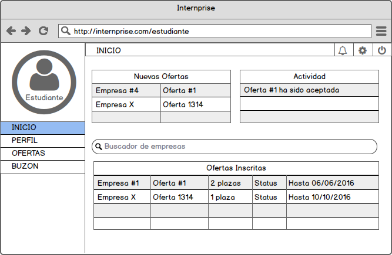
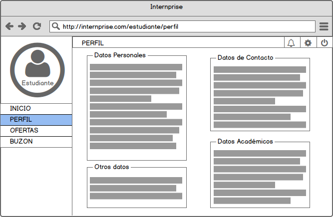
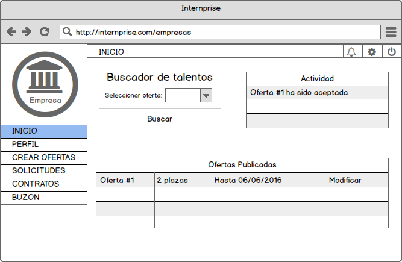
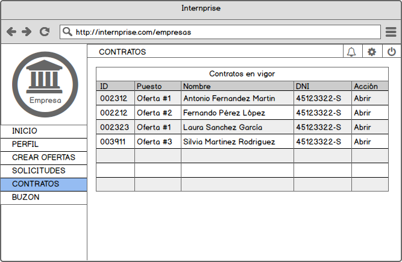
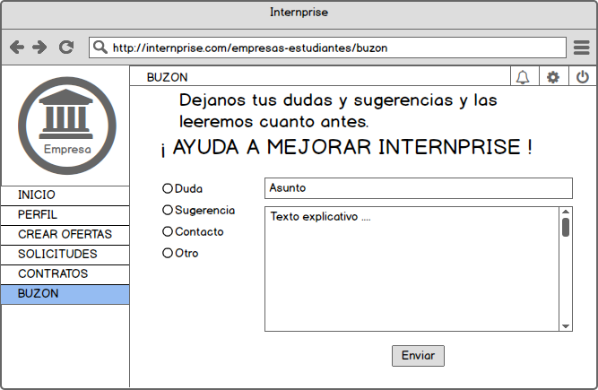
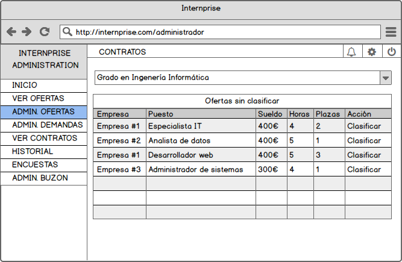
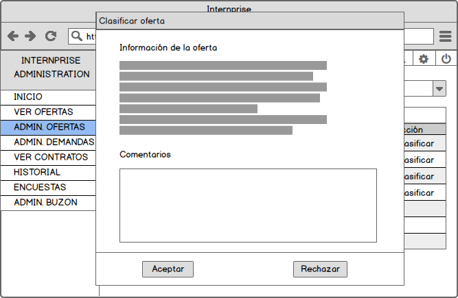
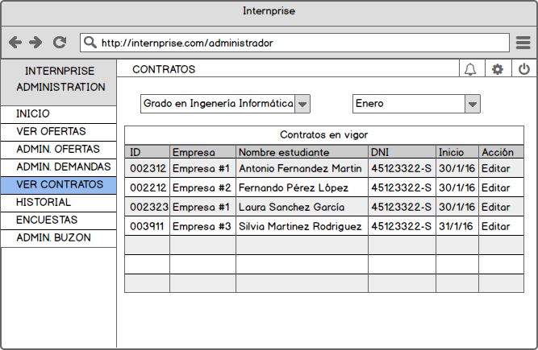

Bocetos
Página principal
Login

Página de login en la cual cada usuario puede iniciar sesión para acceder a su portal personalizado, según sea un usuario con rol de estudiante, empresa o administrador.
Portal Estudiante
Inicio
Dashboard del estudiante en el cual de un simple vistazo puede revisar la actividad de su cuenta, como son las nuevas ofertas que hayan publicado las empresas y también gestionar las ofertas ya solicitadas. Esta será la página principal que se le abrirá al estudiante nada más completar el login. Desde el menú lateral podrá navegar a las distintas páginas que tiene disponibles como estudiante.
Perfil
Esta página muestra información del estudiante, como diversos datos personales, de contacto y académicos. Solo podrá verlos, no modificarlos, para ello el estudiante se tendría que dirigir a la configuración.
Portal Empresa
Inicio
Dashboard de la empresa, muestra información del estado de las ofertas publicadas y un buscador de talentos, que devuelve los estudiantes que mejor se adapten a los requerimientos de las prácticas.
Ver Contratos en vigor
Desde aquí la empresa podrá revisar todos los contratos que está actualmente vigentes, pulsando en cada uno para ver más información sobre el contrato y el estudiante que ocupa dicho contrato.
Buzón
El panel buzón permite a la empresa comunicarse con el administrador de la plataforma con el objetivo de solventar dudas respecto al uso de Interprise y también para proponer nuevas funcionalidades, arreglo de erratas y mejoras en general.
Portal Administrador
Inicio

Dashboard del administrador en el que dispondrá de un buscador de empresas y estudiantes, para poder acceder a sus perfiles y gestionar sus cuentas de usuario en la plataforma. También muestra información de actividad sobre las nuevas ofertas que se publican, el estado de todos los contratos en activo y la moderación de demandas y buzón.
Administrar Ofertas
El panel de ofertas para el administrador muestra una lista con todas las que hay disponibles en ese momento. Pudiendo filtrar por titulación.
Administrar Ofertas (Diálogo modal)
Al pinchar en ellas se abrirá un dialogo modal, desde el que podrá ver más información sobre la oferta y añadir comentarios.
Ver Contratos en vigor
El administrador podrá ver todos los contratos activos y realizar cualquier modificación sobre los datos de cada uno pudiendo filtrarlos por titulación y mes del contrato.